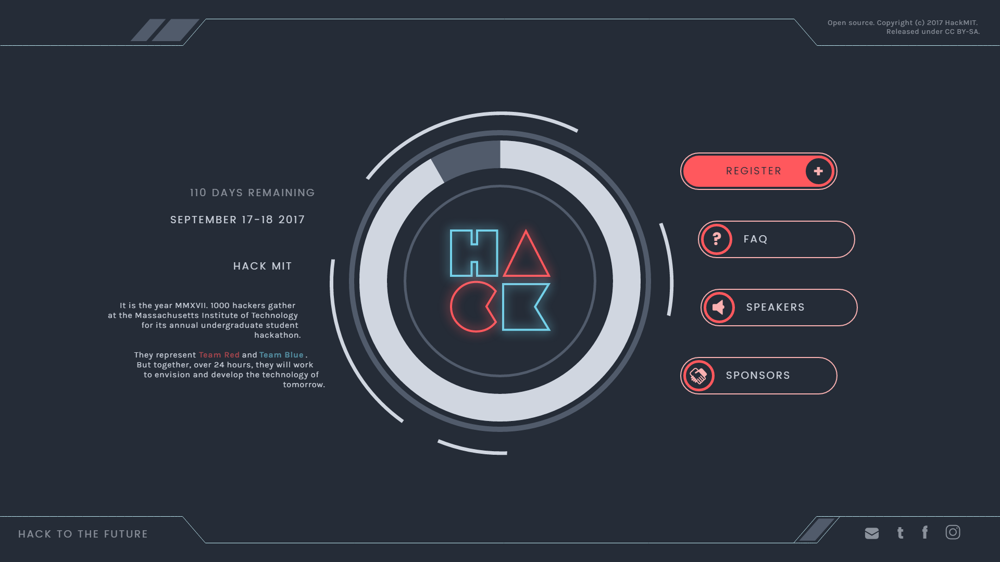
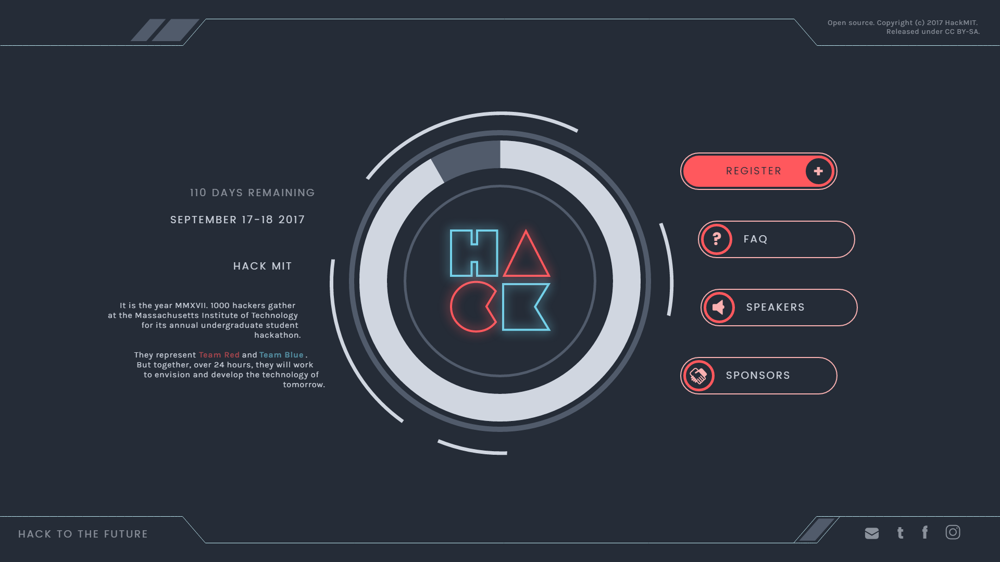
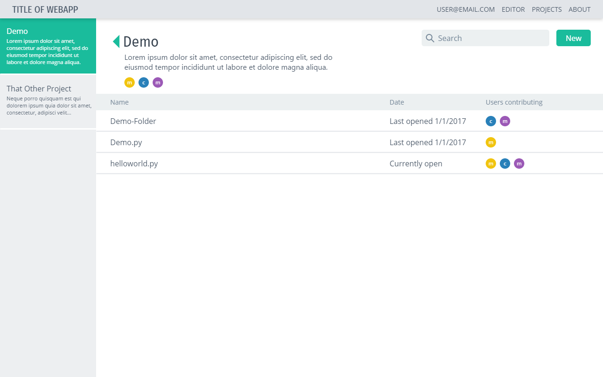
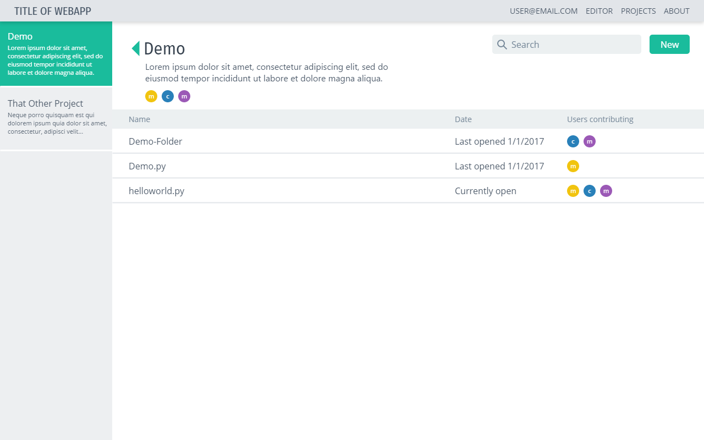

Hi, I'm Jessica Tang
student / designer / writer / coder / adventurer
Currently a second year at MIT studying media, design, and computer science.
I'm interested in how we tell stories through media such as video games and developing different technologies to communicate with both others and ourselves.
Right now I'm
- Interning at Krypt.co
- Preparing for Blueprint
- Editing game studies essays for conferences
- Looking for a summer internship
- On my email @ jynnie [at] mit [dot] edu
scroll for more
 
 
